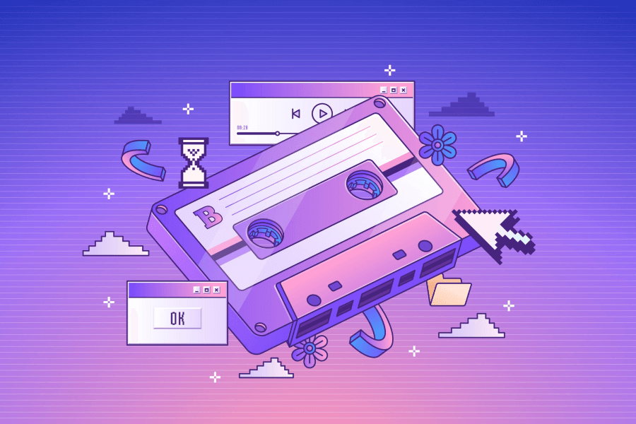

Недостаток сна
Когда вы не высыпаетесь, мозг не может нормально обрабатывать информацию. Внимание рассеивается, а концентрация падает.
На этой странице можно узнать, почему так сложно сосредоточиться и что с этим делать
Когда вы не высыпаетесь, мозг не может нормально обрабатывать информацию. Внимание рассеивается, а концентрация падает.
Попытка делать несколько дел одновременно перегружает мозг. Переключение между задачами отнимает ресурс и снижает продуктивность.
Уведомления, соцсети и новости постоянно отвлекают. Мозгу сложно вернуться к прежней задаче, и он тратит время на «перезапуск».
Здоровый сон — основа внимания. Старайтесь спать 7–8 часов и ложиться в одно и то же время.
Работайте по методу Помодоро: 25 минут концентрации, 5 минут отдыха. Это помогает мозгу восстанавливаться.
Отключите уведомления, уберите телефон, используйте специальные приложения для блокировки отвлекающих сайтов.


